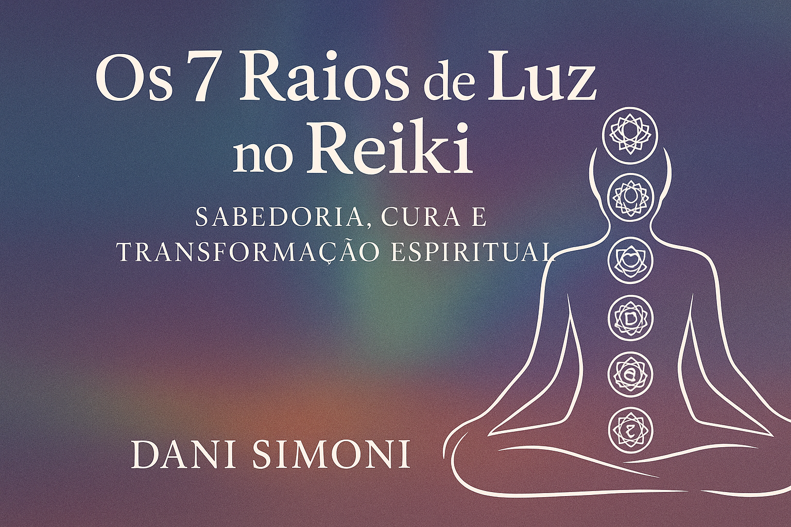

Os 7 Raios de Luz Usados no Reiki
Sabedoria, Cura e Transformação Espiritual através das vibrações divinas. Um eBook ilustrado, profundo e prático por Dani Simoni.
COMPRE JÁ

🌈 O que você vai encontrar neste eBook:
- Conheça os 7 Raios e suas energias: proteção, sabedoria, amor, cura e transmutação
- Conexões espirituais com Arcanjos e Mestres Ascensos
- Práticas energéticas com visualizações, mantras e meditações
- Integração dos Raios nas sessões de Reiki
- Exercícios guiados e afirmações de poder